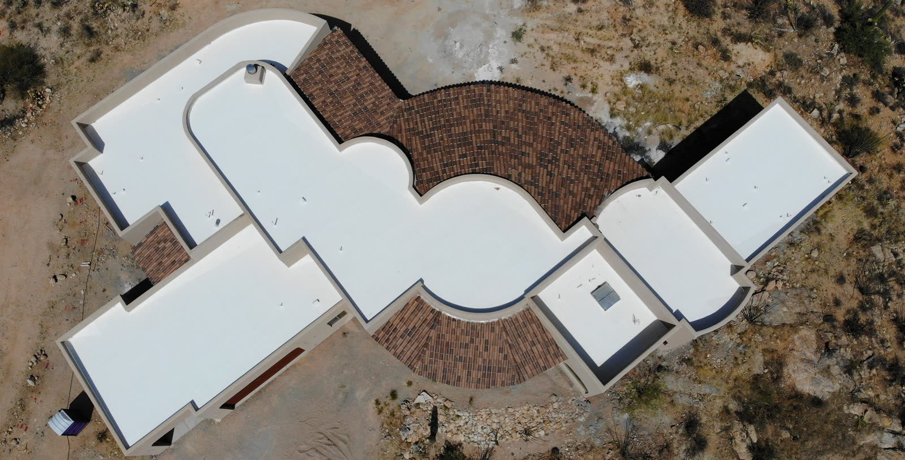

Commercial Roofing · Tucson, AZ
Commercial Roofing for Tucson Businesses
Keep your building, your inventory and your operation protected with a commercial roof that's spec'd and installed for the desert. We handle TPO, coatings and flat systems, and we stay out of your way while we do it.
- TPO & coatings
- Offices, retail & warehouse
- Maintenance programs
- Work around your hours
Commercial Specialists
Less downtime, lower cost over the life of the roof
When a commercial roof fails it's a lot more than a leak. It puts your inventory, your equipment and your ability to stay open at risk. The right system, kept up properly, protects the building and your bottom line for the long haul.
We spec and install commercial flat-roof systems built for the heat out here, schedule the work around how you operate, and run maintenance programs that catch the little stuff before it turns into the expensive stuff.
- TPO single-ply membranes
- Reflective silicone & elastomeric coatings
- Scheduled maintenance & inspections
Offices & Retail
Watertight, energy-efficient roofs that protect tenants and customers.
Warehouse & Industrial
Large-area flat-roof systems built for durability and reflectivity.
Maintenance Programs
Scheduled inspections and upkeep that extend roof life and avoid surprises.
Systems
Commercial flat-roof systems we install
The right commercial system comes down to your building, your budget and how the roof gets used. We install and service all the main ones for Tucson businesses.
Protect the Investment
Commercial roof maintenance in Tucson
The cheapest commercial roof you'll ever own is the one you keep up. Regular maintenance catches ponding, seams pulling apart and coating wearing thin early, before any of it turns into interior damage and an emergency call.
Our maintenance programs cover scheduled inspections, documentation, and knocking out the small repairs before they grow, so you can budget without surprises and get every year out of the roof.
- Scheduled inspections
- Documented condition reports
- Proactive minor repairs
- Predictable budgeting
Related Guides
Guides for commercial property owners
Managing a building? These cover inspections, leak repair and the roof systems we see most on Tucson commercial properties.
Commercial roof inspection checklist A guide to commercial roof leak repair Metal roofing for commercial buildings Modified bitumen roofing for commercial buildings
How It Works
Our Roofing Process
Roof Survey
We assess the existing system, drainage and problem areas, and document everything.
Specification
We recommend repair, recoat or replacement with the right system for your building.
Scheduled Work
Installed around your operating hours to minimize disruption to your business.
Maintenance Plan
Optional ongoing inspections and upkeep to protect your investment long term.
FAQ
Roofing Questions, Answered
Still wondering about something? Call us at 520-753-1758 — straight answers, no pressure.
Ask Us DirectlyWhat commercial roofing systems do you install?
We install and service TPO single-ply, reflective silicone and elastomeric coatings, and modified-bitumen and built-up systems on commercial buildings around Tucson.
What is TPO roofing and why is it popular?
TPO's a single-ply reflective membrane, tough, efficient, and easy on the budget for big flat roofs. That reflective surface is a real edge against our heat, which is why you see it on so many commercial buildings.
Can you work around our business hours?
Yep. We schedule commercial jobs to stay out of your way, after-hours, weekends, phased in sections, whatever keeps you running.
Do you offer commercial roof maintenance?
We do. The maintenance programs cover scheduled inspections, documentation, and getting ahead of small repairs, which stretches the roof's life and keeps you out of emergency-repair territory.
Should we coat or replace our commercial flat roof?
If the roof's still solid underneath, a reflective coating seals it up and buys you years for not much money. If the membrane's actually failing, replacing it is the better long-term value. We'll survey it and give you an honest answer.
Explore More
Related Roofing Services
Protect your building & your bottom line
Free commercial roof survey and a clear answer, repair, recoat or replace, done on your schedule.
Let's Talk
Let's Take a Look at Your Roof
Tell me what's going on up there — an old roof that's due for replacement, a leak, or storm damage — and we'll get you on the books for a free inspection.